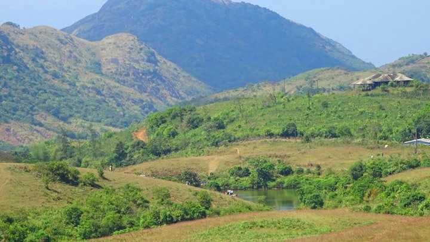

KUMARAKOM BIRD SANCTUARY
A paradise for bird watchers, Kumarakom Bird Sanctuary or Vembanad Bird Sanctuary is situated on the banks of Lake Vembanad in kavanar River basin. The place is spread across a huge area of 14 acres providing a natural habitat to about 91 species of local birds and 50 species of migratory birds.
ILLIKKAL KALLU
Located at a height of 6000 ft above the sea level in the Western Ghats of Kottayam, Kerala, Illikkal Kallu is a major tourist attraction and one of the most pristine spots in all of India. Situated in Moonnilavu Village, Meenachil taluk, the nearest city to the summit is Teekoy.
POONJAR PALACE
A huge majestic palace bounded by a boundary of massive walls is Poonjar Palace situated in Meenachil Taluka. The palace is adorned with a fascinating collection of various type of furniture and antiques which includes grand chandeliers, jewelry boxes, statues, grain measurer, weapons and palm leaf engravings
SUBRAMANIA SWAMI TEMPLE
A beautiful temple depicting the Kerala style of architecture, Subramania Swami Temple is located in a village namely Kidangoor. Dedicated to Lord Subramaya Swami, the temple is mainly known for its annual festival that is held during the months of February and March for 10 daysNADUKANI
After all the blessings from temples, it is time for some adventure. Nadukani is one such place nestled amid the wilderness of nature and densely wooded hills offering its visitors a beautiful trail for trekking
